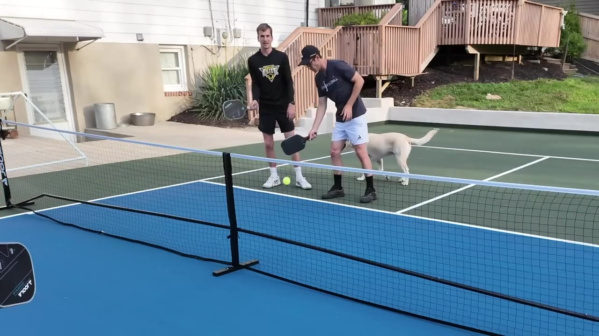
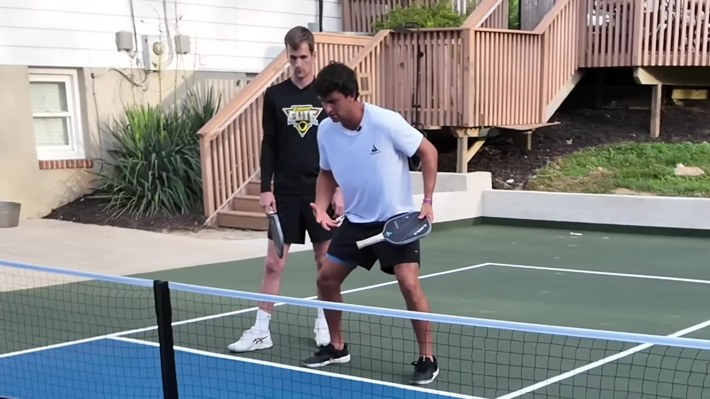
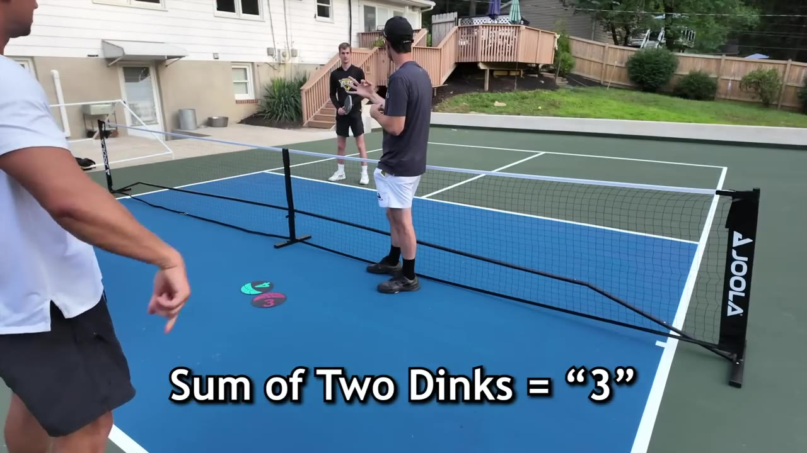
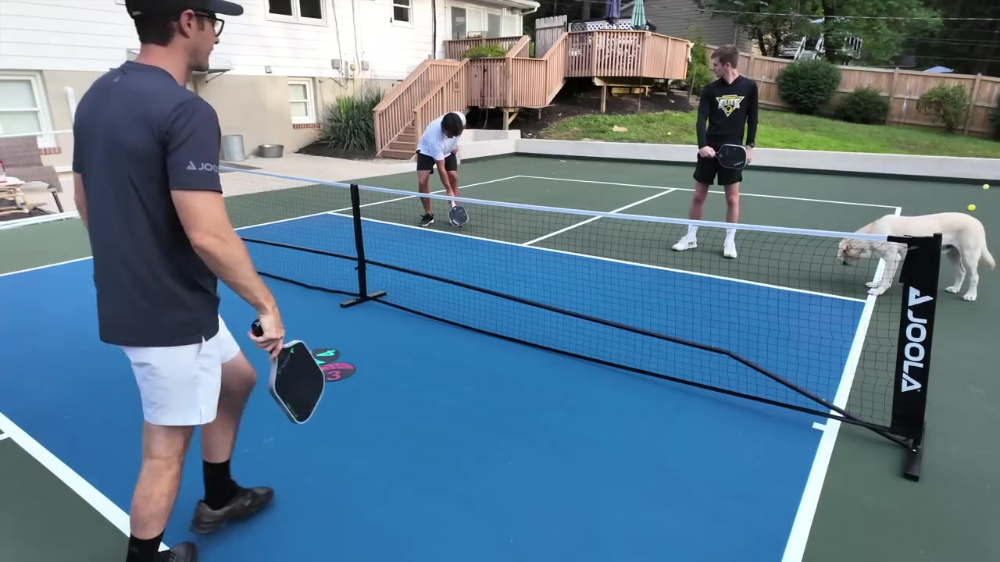
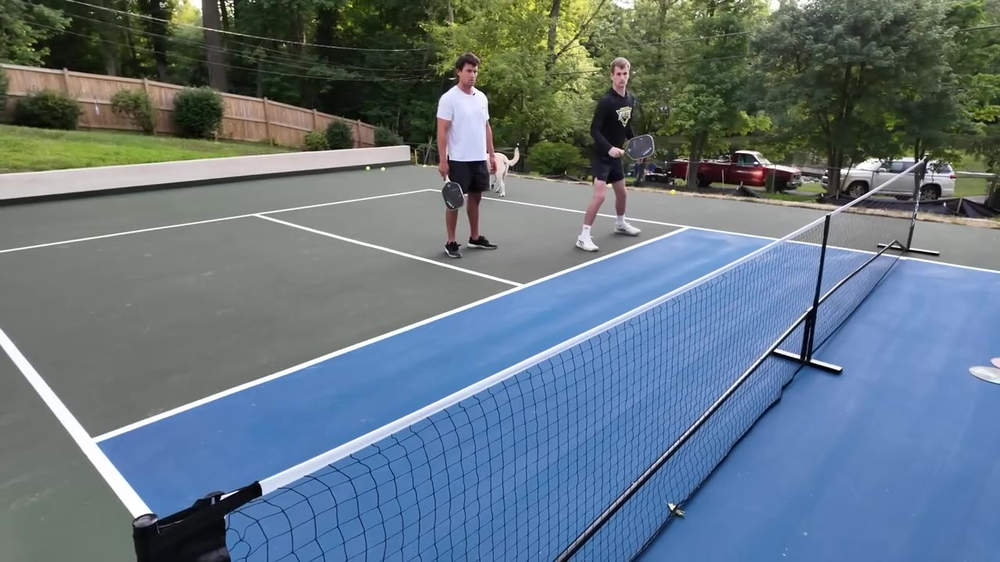
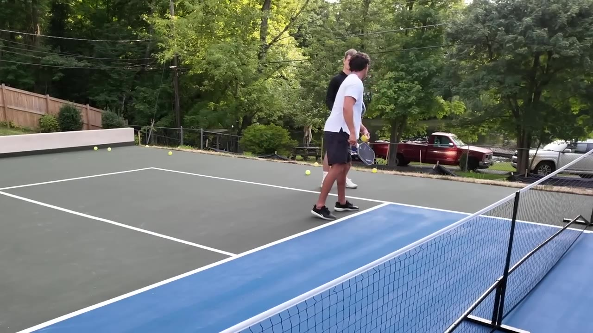
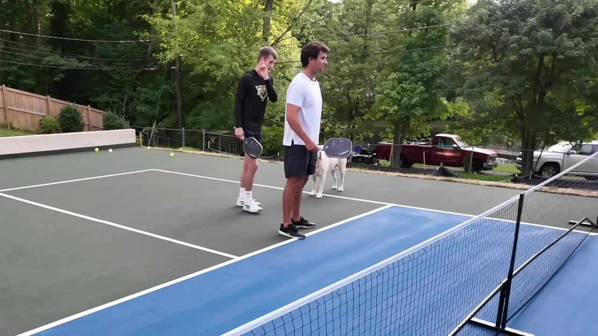

Josh takes Caleb — a competitive spikeball player with a year under his belt — through the core mechanics of pickleball, from paddle face control to the rule of three for dinking strategy.
Watch on YouTubeCaleb is a competitive spikeball player — about a year in, rated 4.4–4.5 — picking up pickleball for the first time. The game looks familiar at a glance but demands a different relationship with timing and paddle face.

"Pretty much almost every shot in pickleball you have to get the paddle below the ball first — that's sort of how we get to it, and then go through it."
The biggest early hurdle: most players wait for the ball and then manipulate the paddle face through impact. The fix is structural — get your paddle head down before you make contact, set the angle, and push to a target.

"If you condense to that target, every direction you need is compressed into one position. If you reach out wide and then try to open it through impact, your paddle face changes mid-movement — and that's why you miss."
Dinking isn't about hitting harder — it's about managing depth and recovery time. Josh introduces the "rule of three": the sum of two consecutive dinks always equals three. An aggressive dink is a 2; a soft dink is a 1. You want 1+2 or 2+1, never 1+1 (nothing happens) or 2+2 (you're out of position).

"If you get a two, you can only look to hit a one back. You don't want one of one or two of two — you always want to make three."— Josh
"If you hit a perfect knifing one that's barely over the net, it doesn't give you enough time to recover. Soft push to wide gives you the margin."
Half volleys — shots taken before the ball bounces — are where pickleball punishes hesitation. The recipe is mechanical: stick the paddle head down early, open the face, move quick. No wrist manipulation.

"Time's your best friend and enemy. If you have time, you can crank over and create topspin. If you don't have time — stick the head down, open it up."
The ready position isn't just a stance — it's directional. Point your opposite corner at the ball and everything follows: wrist stays strong, you're preloaded for any direction, and you're naturally closer to the ball.

"Point your opposite corner at the ball. That makes your wrist strong for taking power, preloads you so any direction is equally likely, and draws you closer to the ball."
Backhand dinks trip up players because they try to slice or lift rather than set and push. The fix: go to the ball, set everything up, and push through — two and through. No up-down-and-around.

"Instead of going up-down-and-around where you could be late, you literally just go to the ball and set it — efficient movement is the key."
Consistency comes from reducing the number of moving parts. Josh references Ben's forehand: shoulder sets, shoulder pushes, shoulder comes — the more moving parts, the less accuracy and consistency.

"The more moving parts, the less accuracy, the less consistency. Less hopping is typically better movement in pickleball."— Josh